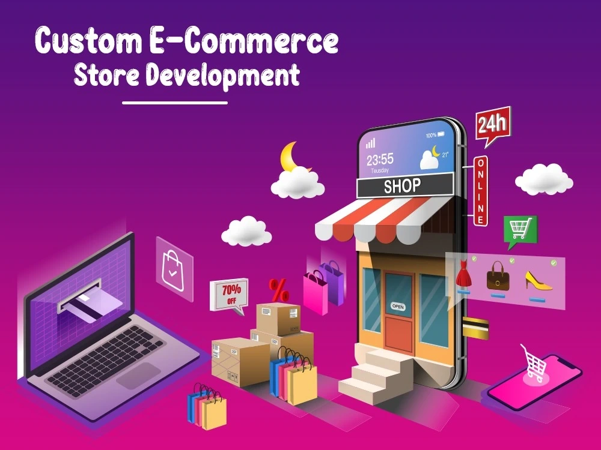

← All Projects
CASE STUDY
Project Title One
প্রজেক্টের এক-দুই লাইনের সংক্ষিপ্ত পরিচয় এখানে লিখুন — এটা কী, কার জন্য বানানো হয়েছে, এবং মূল উদ্দেশ্য কী ছিল।

＋
images/e-com.webp16:9 ratioTech Stack
React
Node.js
PostgreSQL
AWS
Key Results
40%Faster load time
10K+Active users
99.9%Uptime
The Problem
এখানে লিখুন কী সমস্যা বা চ্যালেঞ্জ নিয়ে কাজ শুরু হয়েছিল। এটা যত স্পষ্টভাবে লিখবেন, রিক্রুটার তত সহজে বুঝবে আপনি সমস্যা কীভাবে বিশ্লেষণ করেন।
The Approach
সমাধানের দিকে আপনার চিন্তার প্রক্রিয়া, সিদ্ধান্ত এবং কেন সেই পথ বেছে নিয়েছিলেন তা লিখুন।
- প্রথমে যা রিসার্চ/প্ল্যানিং করা হয়েছিল
- মূল টেকনিক্যাল সিদ্ধান্ত ও কারণ
- টিমের সাথে কীভাবে কাজ ভাগ করা হয়েছিল
What I Built
মূল ফিচার ও ফাংশনালিটি বর্ণনা করুন — কী কী তৈরি করেছেন তার তালিকা দিন।
＋
স্ক্রিনশট ১＋
স্ক্রিনশট ২The Result
প্রজেক্টের প্রভাব/ফলাফল লিখুন — সংখ্যা দিয়ে বললে সবচেয়ে শক্তিশালী হয় (যেমন ইউজার গ্রোথ, পারফরম্যান্স উন্নতি, রেভিনিউ প্রভাব)।